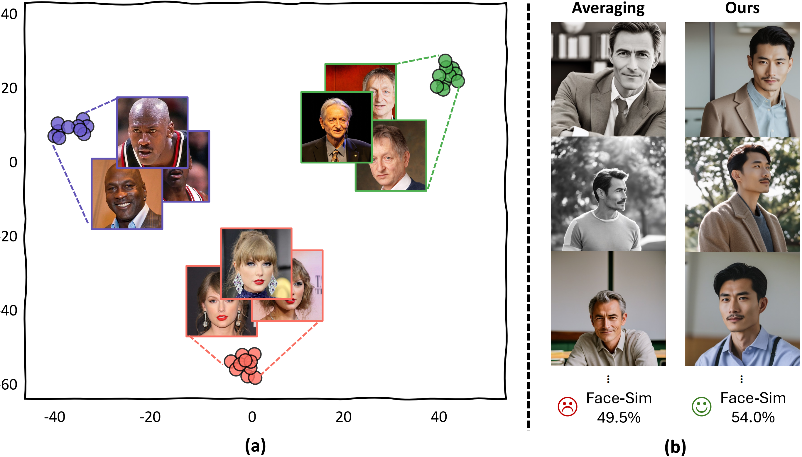
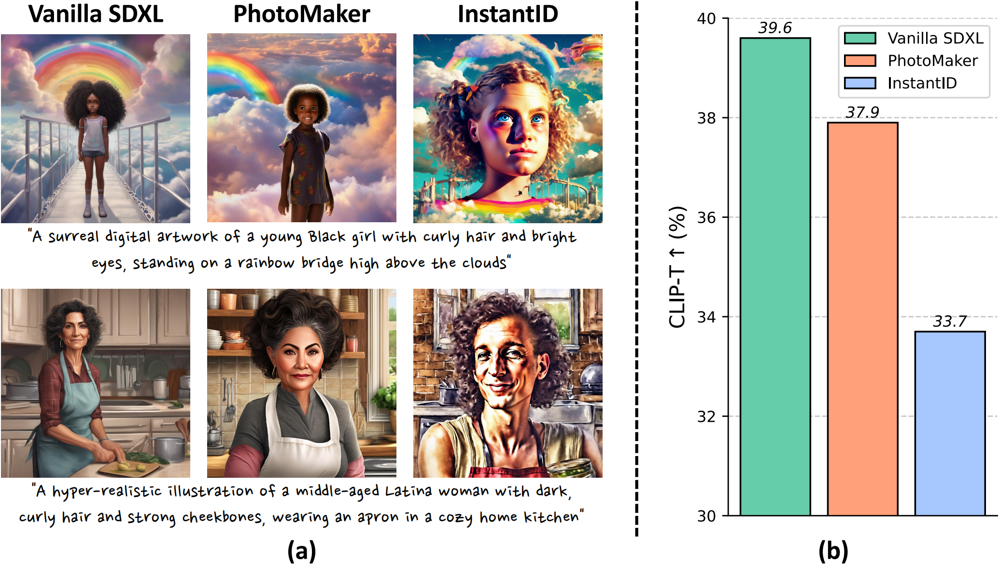
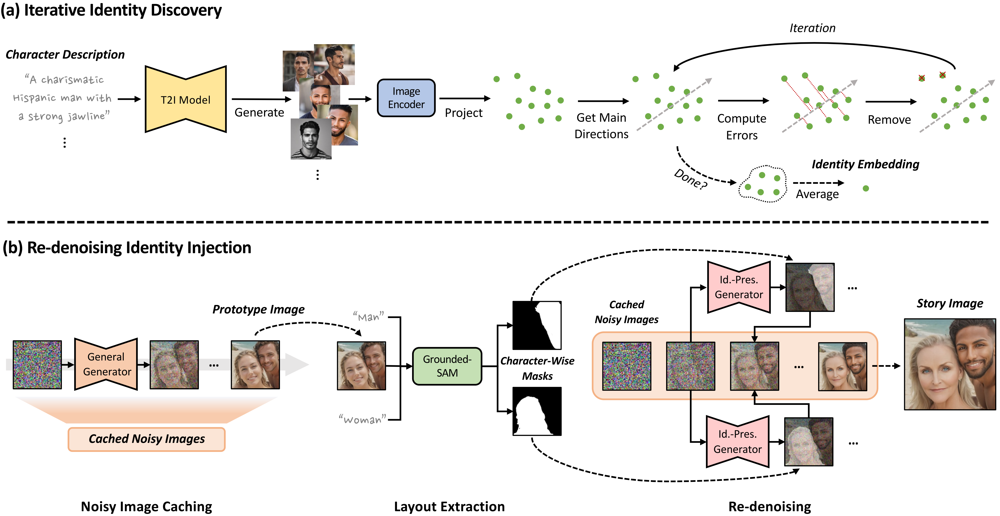
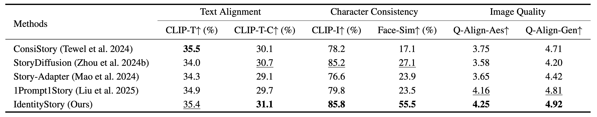
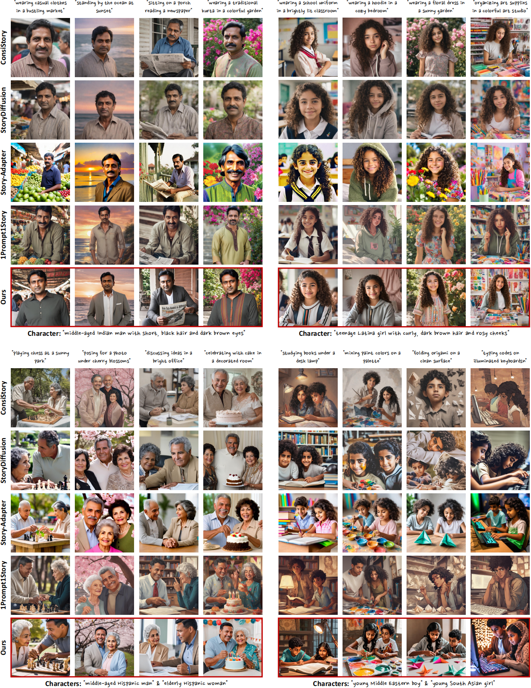
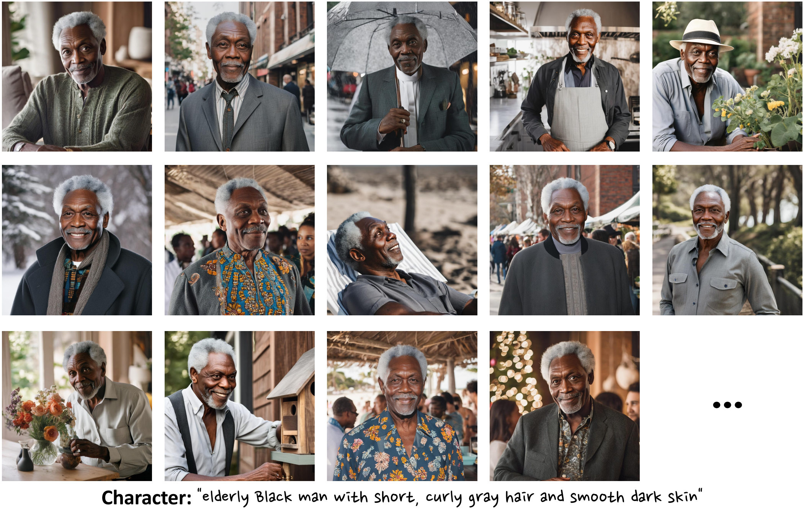

We find that identity-preserving generators possess a well-constructed identity space, where identity representation can be obtained by aggregating character image embeddings.
Recent visual generative models enable story generation with consistent characters from text, but human-centric story generation faces additional challenges, such as maintaining detailed and diverse human face consistency and coordinating multiple characters across different images. This paper presents IdentityStory, a framework for human-centric story generation that ensures consistent character identity across multiple sequential images. By taming identity-preserving generators, the framework features two key components: (i) Iterative Identity Discovery, which extracts cohesive character identities, and (ii) Re-denoising Identity Injection, which re-denoises images to inject identities while preserving desired context. Experiments on the ConsiStory-Human benchmark demonstrate that IdentityStory outperforms existing methods, particularly in face consistency, and supports multi-character combinations. The framework also shows strong potential for applications such as infinite-length story generation and dynamic character composition.
We find that identity-preserving generators possess a well-constructed identity space, where identity representation can be obtained by aggregating character image embeddings.

We find that identity-preserving generators tend to exhibit degraded performance on text alignment, where the generated images may deviate from the text prompts.

IdentityStory comprises two core techniques to address challenges in human-centric story generation:
(i) Iterative Identity Discovery: We find that identity-preserving generators process a well-constructed identity space, where identity representation can be obtained by aggregating character image embeddings. After generating diverse character images from descriptions and projecting them into the identity space, we use Singular Value Decomposition (SVD) to iteratively filter out low-relevance embeddings and extract cohesive identities.
(ii) Re-denoising Identity Injection: To address text alignment degradation of identity-preserving generators, we first use a general generator to create a more text-aligned prototype image. Meanwhile, we cache noisy images during generation to preserve environmental semantics and segment the prototype image to extract character layouts. Using a progressive masking strategy, we then re-denoise with identity-preserving generators to inject identities.

The results of automatic metrics demonstrate IdentityStory's overall superior performance, especially in face similarity (Face-Sim). The best and second-best results are marked in bold and underlined.

Compared to other methods, our IdentityStory exhibits remarkable performance in handling human-centric scenarios, enabling consistent generation of human characters with only text as input. Zoom in for better view.

Infinite-length Story Generation. IdentityStory supports infinite-length story generation, due to its decoupled nature, maintaining consistent character identities and coherent narratives across long sequences.

@article{zhou2025identitystory,
title={IdentityStory: Taming Your Identity-Preserving Generator for Human-Centric Story Generation},
author={Zhou, Donghao and Lin, Jingyu and Shen, Guibao and Liu, Quande and Gao, Jialin and Liu, Lihao and Du, Lan and Chen, Cunjian and Fu, Chi-Wing and Hu, Xiaowei and Heng, Pheng-Ann},
journal={arXiv preprint arXiv:2512.23519},
year={2025}
}